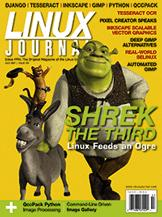

Shutdown Archive web server
Search:
Linux Journal
Issue #159/July 2007

Features
DreamWorks Animation "Shrek the Third": Linux Feeds an Ogre
by Robin Rowe
What can you do with Linux and 20 million CPU render hours?
Tesseract: an Open-Source Optical Character Recognition Engine
by Anthony Kay
If you really need OCR.
Introducing Vector Graphics and Inkscape
by Marco Fioretti
Want scalable beauty?
Interview with Pavel Kanzelsberger, Creator of Pixel
by James Gray
Photoshop comes to Linux, sort of.
Indepth
Automated GIMP Processing of Web Images
by Ben Martin
Program GIMP to work for you.
Writing Your Own Image Gallery Application with the UNIX Shell
by Girish Venkatachalam
GUI? We don't need no stinking GUI.
Programming Python, Part II
by José P. E. "Pupeno" Fernàndez
More love for learning Python.
Image Processing with QccPack and Python
by Suhas Desai
A library collection for Python image processing.
Mambo Exploit Blocked by SELinux
by Richard Bullington-McGuire
SELinux catches exploits.
Role-Based Single Sign-on with Perl and Ruby
by Robb Shecter
Let the role dictate the privileges.
Columns
Reuven M. Lerner's At the Forge
First Steps with Django
Marcel Gagné's Cooking with Linux
Let Me Show You How It's Done with a Little Video
Dave Taylor's Work the Shell
Displaying Image Directories in Apache, Part IV
Doc Searls' Linux for Suits
Beyond Blogging's Black Holes
Nicholas Petreley's /var/opinion
Amazing Free Distributions Abound
Quick Takes
Deep Images
by Dan Sawyer
In Every Issue
Letters
upFRONT
Tech Tips
New Products
Archive Index
Shutdown Archive web server
Search:
Copyright © 1994 - 2018
Linux Journal
. All rights reserved.